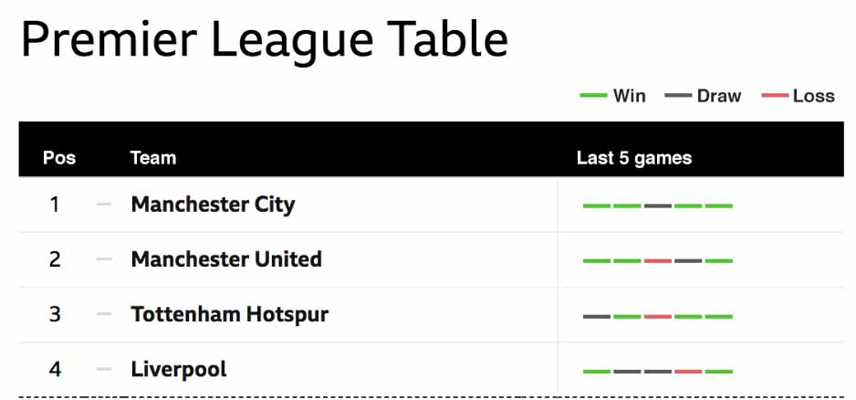
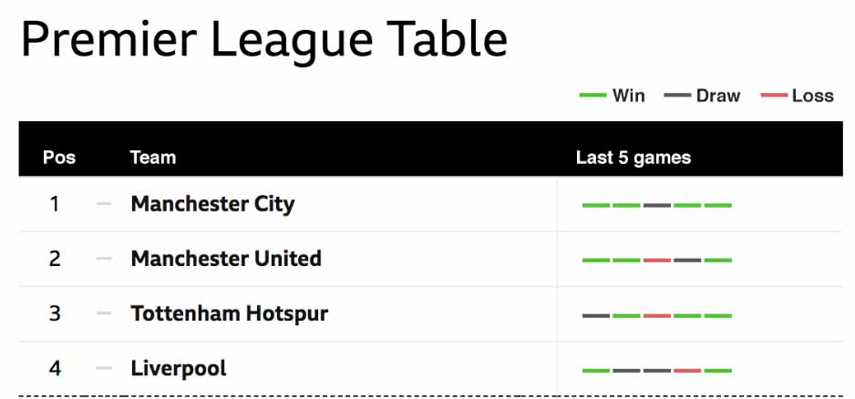

The form of each team over the last 5 games is shown.
Each game is shown as a distinct coloured rectangle. Green, red and grey represent a win, loss or draw.
End of slide. Go to next slide
Each game is shown as a distinct coloured rectangle. Green, red and grey represent a win, loss or draw.
End of slide. Go to next slide